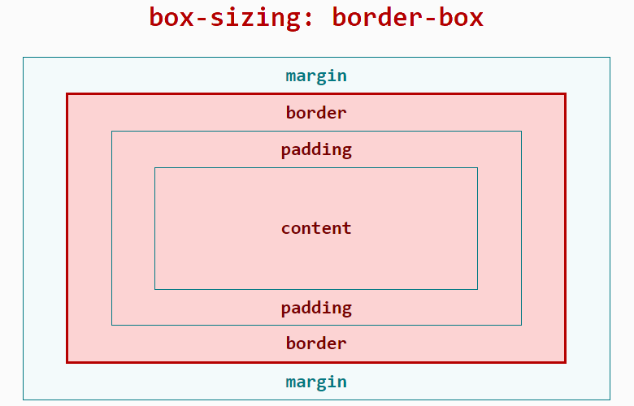

# 页面样式与布局
# 盒模型
JS 应用布局框架使用 border-box 模型，具体表现与宽高边距计算可参考 MDN 文档box-sizing (opens new window)，暂不支持 content-box 模型与手动指定 box-sizing 属性。

布局所占宽度 Width：
Width = width(包含padding-left + padding-right + border-left + border-right)
布局所占高度 Height：
Height = height(包含padding-top + padding-bottom + border-top + border-bottom)
# 长度单位
框架对长度单位的支持，支持长度单位px、%、dp。
# px
与传统 web 页面不同，px是相对于项目配置基准宽度的单位，已经适配了移动端屏幕，其原理类似于rem。
开发者只需按照设计稿确定框架样式中的 px 值即可。
首先，我们需要定义项目配置基准宽度，它是项目的配置文件（<ProjectName>/src/manifest.json）中config.designWidth的值，默认不填则为 480。
然后， 设计稿1px与框架样式1px转换公式如下：
设计稿1px / 设计稿基准宽度 = 框架样式1px / 项目配置基准宽度
示例如下：
若设计稿宽度为 640px，元素 A 在设计稿上的宽度为 100px，实现的两种方案如下：
方案一：
修改项目配置基准宽度：将项目配置基准宽度设置为设计稿基准宽度，则框架样式1px等于设计稿1px
- 设置
项目配置基准宽度，在项目的配置文件（<ProjectName>/src/manifest.json）中，修改config.designWidth：
{
"config": {
"designWidth": 640
}
}
- 设置元素 A 对应的框架样式：
width: 100px;
方案二：
不修改项目配置基准宽度：若当前项目配置的项目配置基准宽度为 480，设元素 A 的框架样式 xpx，由转换公式得：100 / 640 = x / 480。
- 设置元素 A 对应的框架样式：
width: 75px;
# 百分比%
JS 应用的百分比计算规则与 css 类似，可参考MDN 文档 (opens new window)。
# dp3+
dp 单位，全称为 device independent pixels，即设备独立像素。
计算公式：dp 数值 = 物理分辨率 / 设备像素比(device pixel ratio)
举例：一个设备分辨率为 480*480，设备像素比 = 2，屏幕宽度 = 480 像素 = 240dp
示例代码：
<style>
.dp-box{
width:360dp;
height:360dp;
background-color:green;
margin-bottom:40px;
}
</style>
# 设置定位
position 支持2种属性值：relative、absolute，并且默认值为 relative，可以参考MDN 文档 (opens new window)。
# 设置样式
开发者可以使用内联样式、tag选择器、class选择器、id选择器来为组件设置样式
同时也可以使用并列选择设置样式，暂时不支持后代选择器。
详细的文档可以查看此处。
示例如下：
<template>
<div class="page">
<text style="color: #FF0000;">内联样式</text>
<text id="title">ID选择器</text>
<text class="title">class选择器</text>
<text>tag选择器</text>
</div>
</template>
<style>
.page {
flex-direction: column;
}
/* tag选择器 */
text {
color: #0000FF;
}
/* class选择器（推荐） */
.title {
color: #00FF00;
}
/* ID选择器 */
#title {
color: #00A000;
}
/* 并列选择 */
.title, #title {
font-weight: bold;
}
</style>
# 通用样式
通用样式如 margin，padding 等属性可以点击此处查询。
# Flex 布局示例
框架使用Flex布局，关于Flex布局可以参考外部文档A Complete Guide to Flexbox (opens new window)。
Flex布局的支持也可以在官网文档的通用样式查询。
div 组件为最常用的 Flex 容器组件，具有 Flex 布局的特性；text、span组件为文本容器组件，其它组件不能直接放置文本内容。
示例如下：
<template>
<div class="page">
<div class="item">
<text>item1</text>
</div>
<div class="item">
<text>item2</text>
</div>
</div>
</template>
<style>
.page {
/* 交叉轴居中 */
align-items: center;
/* 纵向排列 */
flex-direction: column;
}
.item {
/* 有剩余空间时，允许被拉伸 */
/*flex-grow: 1;*/
/* 空间不够用时，不允许被压缩 */
flex-shrink: 0;
/* 主轴居中 */
justify-content: center;
width: 200px;
height: 100px;
margin: 10px;
background-color: #FF0000;
}
</style>
# 动态修改样式
动态修改样式有多种方式，与传统前端开发习惯一致，包括但不限于以下：
- 修改 class：更新组件的 class 属性中使用的变量的值
- 修改内联 style：更新组件的 style 属性中的某个 CSS 的值
- 修改绑定的对象：通过绑定的对象控制元素的样式
示例如下：
<template>
<div style="flex-direction: column;">
<!-- 修改 class -->
<text class="normal-text {{ className }}" onclick="changeClassName">点击我修改文字颜色</text>
<!-- 修改内联 style -->
<text style="color: {{ textColor }}" onclick="changeInlineStyle">点击我修改文字颜色</text>
<!-- 修改绑定的对象 -->
<text style="{{ styleObj }}" onclick="changeStyleObj">点击我修改文字颜色</text>
</div>
</template>
<style>
.normal-text {
font-weight: bold;
}
.text-blue {
color: #0faeff;
}
.text-red {
color: #f76160;
}
</style>
<script>
export default {
private: {
className: 'text-blue',
textColor: '#0faeff',
styleObj: {
color: 'red'
}
},
onInit () {
console.info('动态修改样式')
},
changeClassName () {
this.className = 'text-red'
},
changeInlineStyle () {
this.textColor = '#f76160'
},
changeStyleObj () {
this.styleObj = {
color: 'yellow'
}
}
}
</script>
# 引入 less/scss 预编译
# less 篇
less 语法入门请参考less 中文官网 (opens new window)。
使用 less 请先安装相应的类库：less、less-loader：
npm i less less-loader
详见文档样式语法 --> 样式预编译；然后在<style>标签上添加属性lang="less" 示例如下：
<template>
<div class="page">
<text id="title">less示例!</text>
</div>
</template>
<style lang="less">
/* 引入外部less文件 */
@import './style.less';
/* 使用less */
</style>
# scss 篇
scss 语法入门请参考scss 中文官网 (opens new window)。
使用 scss 请在JS 应用项目下执行以下命令安装相应的类库：node-sass、sass-loader：
npm i node-sass sass-loader
详见文档style 样式 --> 样式预编译；然后在<style>标签上添加属性lang="scss"。
示例如下：
<template>
<div class="page">
<text id="title">less示例!</text>
</div>
</template>
<style lang="scss">
/* 引入外部scss文件 */
@import './style.scss';
/* 使用scss */
</style>
# 使用 postcss 解析 css
JS 应用支持 postcss 来解析 css，postcss 可以采用类似 less，sass 的语法来解析 css 了，比如支持变量，嵌套，定义函数等功能了。
使用 postcss 解析 css 分为 3 个步骤：
1.安装对应的 loader：
npm i postcss-loader precss@3.1.2 -D
2.在项目的根目录新建一个 postcss.config.js，增加如下内容：
module.exports = {
plugins: [require('precss')]
}
其中 precss 为 postcss 的插件。
3.在页面对应的 style 标签上增加 lang="postcss"，如下：
<style lang="postcss">
/* 使用postcss */
.page {
justify-content: center;
background-color: #00beaf;
}
#title {
color: #FF0000;
}
</style>
这样就可以在 css 里面书写对应的代码了。
说明
如果想支持更多的语法格式，可以在 postcss.config.js 文件里面添加更多的插件，关于 postcss 的插件见插件地址 (opens new window)。